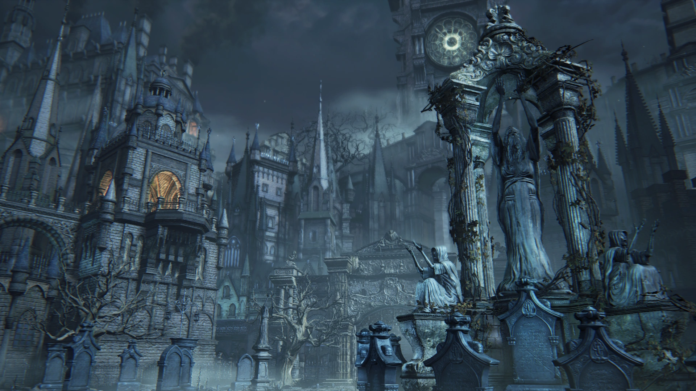
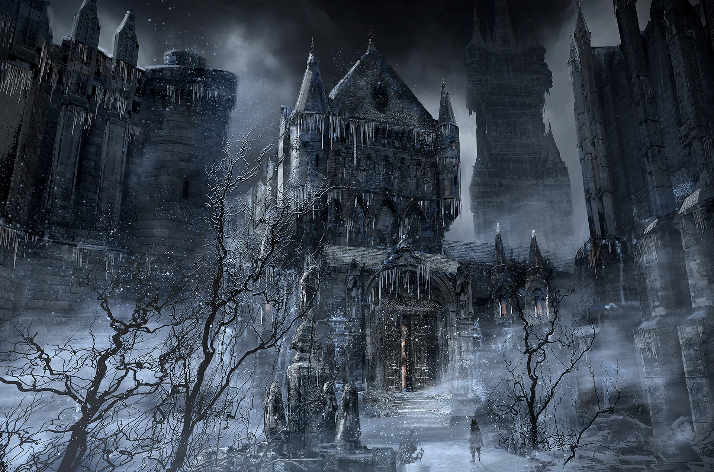
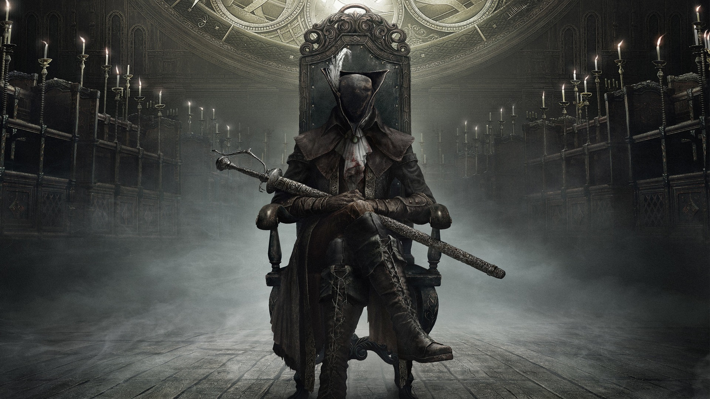
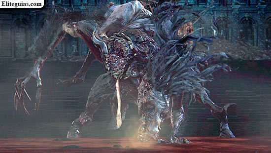
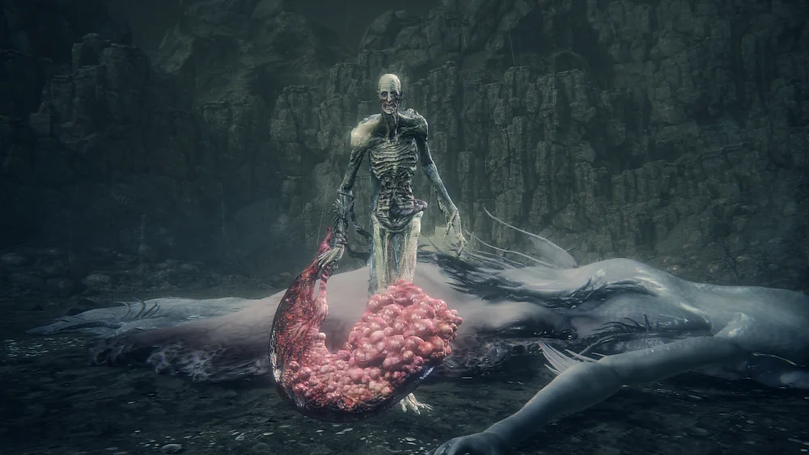

Introducción
Bloodborne (2015) es una reinvención de la fórmula Souls en un mundo de horror gótico y cósmico.
Ambientado en Yharnam, una ciudad devorada por la peste y la locura, combina combate rápido, exploración meticulosa y una narrativa enigmática.
Su atmósfera y estética inspiradas en Lovecraft lo hacen único.
Mejores zonas
- Catedral del Distrito
Es el centro del juego y un punto de interconexión entre muchas zonas.
Su arquitectura gótica y su ambiente opresivo la convierten en una de las más icónicas.
Desde sus puertas se accede a los mayores horrores de Yharnam.

- Cainhurst Castle
Un castillo helado perdido entre montañas.
Es una de las áreas más bellas y misteriosas del juego.
Su historia de nobleza corrompida y venganza encaja perfectamente con el tono trágico del universo de Bloodborne.

- Pesadilla de Mensis
La cúspide del horror cósmico.
En esta zona se mezcla la locura, lo grotesco y lo incomprensible.
Su ambientación retorcida y el enfrentamiento final con Micolash son pura esencia Lovecraftiana.

Mejores Jefes
- Lady Maria de la Torre del Reloj Astral
Un duelo elegante y melancólico.
Su velocidad y estilo hacen del combate una danza mortal.
Es uno de los momentos más emocionales y visualmente hermosos del juego.

- Ludwig, la Espada Sagrada
Un enfrentamiento grotesco y trágico.
Ludwig es un monstruo desfigurado que recuerda su humanidad en plena batalla.
Su segunda fase, cuando recupera la lucidez, es pura poesía visual.

- Huérfano de Kos
El jefe final del DLC y uno de los combates más intensos de toda la saga.
Su furia y desesperación transmiten un dolor casi humano.
Representa el punto más alto de la tragedia cósmica de Bloodborne.
